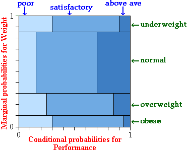

Relationships between numerical variables
When two or more measurements are made from each individual in a population, we are usually interested in whether these variables are related to each other. When both variables are numerical, the strength of the relationship can be described with a correlation coefficient and regression models allow us to test whether two variables are related on the basis of sample data.
Relationships between categorical variables
Two categorical measurements may also be related.
As with numerical variables, we may be able to conclude that any relationship between categorical variables is causal if it results from an experiment (e.g. a randomised experiment in which some pea seeds are coated and others are uncoated). From observational data however, we usually cannot deduce a causal relationship — all we can say is that the variables may be associated.
What does association mean?
We say that two categorical variables are associated if knowledge of the value of one tells you something about the likely value of the other.
If the conditional distribution of Y given X = x depends on the value of x, we say that X and Y are associated.
For example, if the conditional distribution of Marital Status given Gender = male is different from the conditional distribution of Marital Status given Gender = female, then we say that Gender and Marital Status are associated.
In the next page, we will characterise two variables that are not associated, but first we give an example of variables that are related.
Athletic performance and weight
To illustrate the idea of association, we use a table of joint probabilities that constitute a possible model for athletic performance by high school children and their weight.
Note that the joint probabilities in this model do not accurately represent the effect of weight on performance — they are only used to illustrate the concepts.
| Athletic performance | ||||
|---|---|---|---|---|
| Poor | Satisfactory | Above average | Marginal | |
| Underweight | 0.0450 | 0.0900 | 0.0150 | 0.1500 |
| Normal | 0.0825 | 0.3025 | 0.1650 | 0.5500 |
| Overweight | 0.0500 | 0.1200 | 0.0300 | 0.2000 |
| Obese | 0.0300 | 0.0650 | 0.0050 | 0.1000 |
| Marginal | 0.1700 | 0.5400 | 0.2900 | 1.0000 |
The implications of this model are best explained from conditional probabilities for athletic performance, given weight:
| Athletic performance | ||||
|---|---|---|---|---|
| Poor | Satisfactory | Above average | Total | |
| Underweight | 0.30 | 0.60 | 0.10 | 1.0 |
| Normal | 0.15 | 0.55 | 0.30 | 1.0 |
| Overweight | 0.25 | 0.60 | 0.15 | 1.0 |
| Obese | 0.30 | 0.65 | 0.05 | 1.0 |
A proportional Venn diagram displays these conditional probabilities graphically.

If this model is correct, the conditional probability of poor performance is lowest for students with 'normal' weight, increasing as weight gets further from 'normal'. Similarly, the probability of above average performance is highest for those with 'normal' weight.